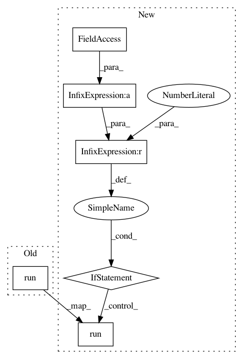

d2ea56a8ba947ee867ed67454f1756575b7f3da9,softlearning/algorithms/sac.py,SAC,_do_training,#SAC#Any#Any#,299
Before Change
feed_dict = self._get_feed_dict(batch)
self._sess.run(self._training_ops, feed_dict)
self._sess.run(self._target_ops)
def _get_feed_dict(self, batch):
Construct TensorFlow feed_dict from sample batch.
After Change
feed_dict = self._get_feed_dict(iteration, batch)
self._sess.run(self._training_ops, feed_dict)
if iteration % self._target_update_interval == 0:
// Run target ops here.
self._sess.run(self._target_ops)
def _get_feed_dict(self, iteration, batch):
Construct TensorFlow feed_dict from sample batch.
feed_dict = {
In pattern: SUPERPATTERN
Frequency: 3
Non-data size: 6
Instances
Project Name: rail-berkeley/softlearning
Commit Name: d2ea56a8ba947ee867ed67454f1756575b7f3da9
Time: 2018-05-27
Author: kristian.hartikainen@gmail.com
File Name: softlearning/algorithms/sac.py
Class Name: SAC
Method Name: _do_training
Project Name: rail-berkeley/softlearning
Commit Name: 6e64bd7ecd3cb0b9e0fa1696ace665254b568e89
Time: 2018-05-22
Author: kristian.hartikainen@gmail.com
File Name: sac/algos/sac_v2.py
Class Name: SAC
Method Name: _do_training
Project Name: rail-berkeley/softlearning
Commit Name: ee235aff686c5ec1048138d799107801df20b819
Time: 2018-05-22
Author: kristian.hartikainen@gmail.com
File Name: sac/algos/sac.py
Class Name: SAC
Method Name: _do_training